Bienvenue et merci de votre intérêt!
Vous retrouverez sur cette page les projets sur lesquels j'ai travaillés.
Utilisation des programmes suivants pour la création: Visual Studio, Unreal, Unity, Eclipse, Blender, Perforce, Adobe Photoshop et Gimp.
Utilisation des langages suivants: C++, C#, CSS, HTML, JavaScript et MySQL.
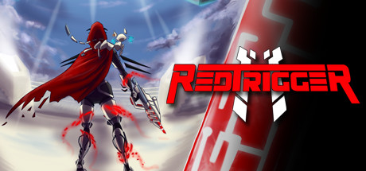
Stage été 2022 - Bold Spirit Game Studio
Contient : un document expliquant tous les éléments sur lesquels j'ai travaillé durant le stage,
une vidéo de la démo (version présentée lors de l'Otakuthon 2022) présentant les éléments que j'ai implémentés
et un mini jeu pour rapidement montrer certains éléments qui ne se trouvent pas dans la démo.
La démo est disponible sur demande.
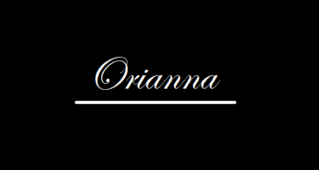
Tout premier projet créé. Il a été fait sur Visual Studio.
Après la création de votre personnage, vous pourrez combattre des monstres, vous promenez dans le village ou les environs, ainsi que compléter des quêtes.
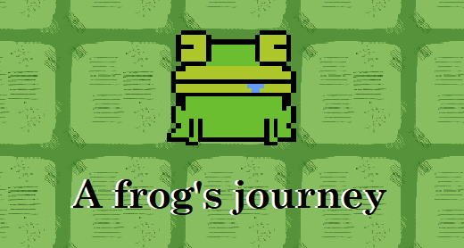
Projet créé en équipe, fait avec Unity.
Vous êtes une grenouille qui se retrouve sur une île. Les villageois ont des quêtes pour vous, mais faîtes attention aux monstres qui se trouvent sur l'île mauve, ainsi que sur celle qui est jaune.
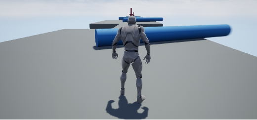
Projet créé avec Unreal.
Simple course à obstacle avec points de sauvegarde.
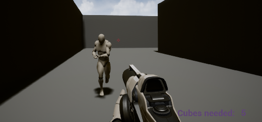
Projet créé avec Unreal.
Trouvez les 5 cubes dans ce labyrinth et rendez-vous derrière le portail vert pour gagner la partie. Faîtes attentions aux ennemis qui vous poursuivent.
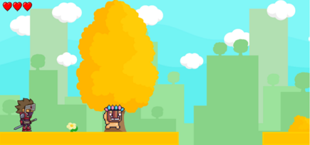
Projet d'équipe fait avec Unity.
Vous êtes un samurai qui se retrouve dans un monde étrange. Faîtes attention aux scies se trouvant au sol qui semblent être incassables et à ces personnages masqués que vous pouvez attaquer en créant une boule de feu avec votre épée. Faîtes de votre mieux pour survivre!
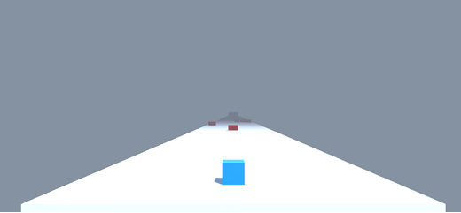
Un des premiers projets fait avec Unity.
Vous êtes un petit cube bleu qui doit se rendre jusqu'à la fin du parcours sans rentrer en collision avec les obstacles rouges.
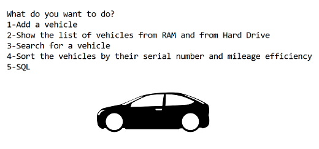
Projet créé avec Eclipse IDE
Contient: Polymorphisme, héritage, file manager, singleton collection, hash map collection, validator, comparator, raise exception, SQL, BackEnd et FrontEnd, ainsi qu'une version du projet avec un fichier jar.
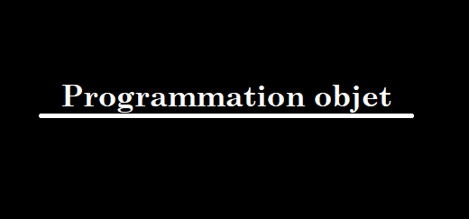
Compilation de différents projets sur la programmation objet.
List: création d'une liste de nombre, mettre les nombres en ordre, etc.
pw2Bank: création de comptes de banque, retirer ou mettre de l'argent, etc.
Shamim: création d'un hamburger et le prix s'affiche
Monnaie: exemple de division d'un montant d'argent avec et sans modulo
Zoo: exemple d'héritage
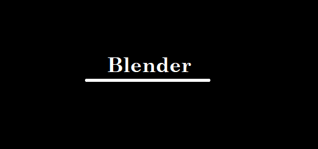
Différents projets créés avec Blender
Contient un mug a café dans lequel se trouvent deux crayons, un bonhomme en pain d'épice, une salle avec matériaux/couleurs contenant plusieurs objets et mon projet final (salle sous-terraine annexée à une grotte, contient plusieurs éléments [livres, plante, champignons, lumières, etc.] et un personnage).
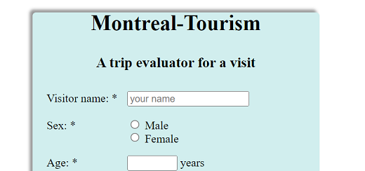
Page web/html d'un formulaire touristique pour la région de Montréal.